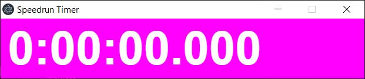
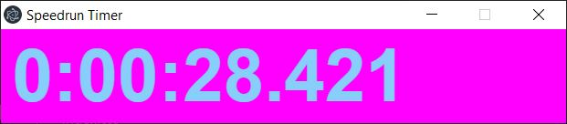

Projects
Dungeon Master Tools

This is an application written in Java, with the JavaFX framework. It is a tool that is meant to help dungeon masters run a game of Dungeons & Dragons (or other D20-baesd game) more easily. It has a monster lookup that interfaces with an sqlite database (that you can create yourself from scratch, following the provided schema, or utilize the provided one that only contains information from the SRD). It also has a dice roller, an encounter builder that you can build from scratch using the monster database or by manual input, and then you can save/load these encounters later, and a notes section. It also saves your data between uses, so that you don't have to re-enter information.
BitBucket RepoDownload the latest version here!
MTG Card Fetcher for Discord

This was a personal project that was mostly just for fun and to play around with the Discord API. My friends and
I have a personal Discord chat channel for our Magic: The Gathering group. The bot works by interfacing with the
Scryfall.com web API to retrieve card information for Magic: The Gathering, and return that information in the
form of an image in the chat, and a link that contains either the EDHREC (for the Commander game variant), or from
Gatherer (which is the official Wizards of the Coast website). It also has additional features that are relevant
only to our group, and thus will not be found on the GitHub repo. This bot is written in TypeScript and runs via
Node.js.
An old version of the bot was written in Java utilizing the Java Discord API.
One disadvantage to this method was that Java does not handle REST APIs as nicely as JavaScript/TypeScript does. So
due to my lack of experience with REST APIs, I relied on a third-party one
for interfacing with Scryfall.com. I no longer am putting any work into the Java bot, and as such, any glaring bugs that
exist will likely never be addressed. For those interested, the bot can be found here.
Electron Speedrun Timer
 This project was conceived when I was attempting to learn how to speedrun Minecraft while playing on Linux. Unfortunately, there didn't seem to be any good speedrun timers on Linux. This is just a simple timer that can be started, paused, and re-started. Furthermore, the style can be customized, including font, font color during each of the states, and background for chroma-keying in recording software such as OBS. All the styling options are outlined on the BitBucket README page. Although Electron is a cross-playform UI framework, this application only has pre-built images and installers for the Linux operating system (as of writing this). This was due to some difficulties with getting electron-builder-windows working on Linux (and thus, BitBucket pipelines). The application runs just fine on Windows, but will need to be built from source. This project also has an example of utilizing bitbucket pipelines to automate the build process and post the results to the downloads page of the repository.
BitBucket RepoBrowser Snake
For this one I just got bored one night and wanted to try and make a game in the browser. I had worked with HTML canvases a little bit in school, but never did any personal projects using them. This is just a simple implementation of the game snake. Since it's just a single script file, I'll have the source embedded on this page rather than linking to a repository.
SourcePlay it!